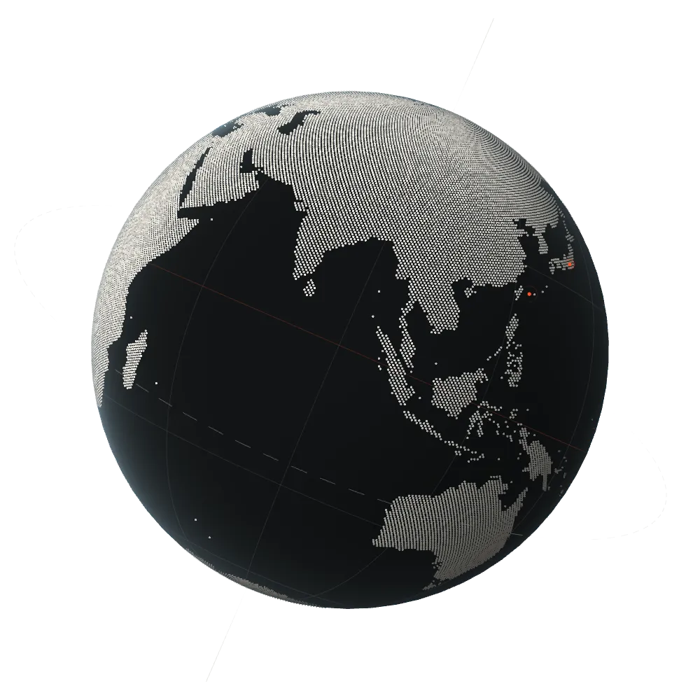

Technel LLCPlanetary Unit
technel.world
惑星的危機に挑む
Confronting the planetary crisis — through the philosophy of technology.
We shape our tools and thereafter our tools shape us.
John M. Culkin
Technology is neither good nor bad; nor is it neutral.
Melvin Kranzberg
There are no passengers on Spaceship Earth. We are all crew.
Marshall McLuhan
So long as we represent technology as an instrument, we remain held fast in the will to master it.
Martin Heidegger
We are as gods and might as well get good at it.
Stewart Brand
The major problems in the world are the result of the difference between how nature works and the way people think.
Gregory Bateson
Statement 声明
惑星は、いま臨界にある。
気候も、生態系も、わたしたちの感覚も。
危機の根には、いつも人間と技術の関係がある。
テクネルは、技術をいちど手放し、
手と身体で学び直す。
問い、つくり、場をひらく。
技術哲学で、惑星的危機に挑む。
The planet stands at a threshold. Climate, ecosystems, even our own senses — at the root of every crisis lies the relation between humans and technology.
Technel lets go of technology, then relearns it by hand and body. We question, we make, we open fields. We confront the planetary crisis through the philosophy of technology.
What we do 事業
-
tec.01
Think
問う
技術哲学のリサーチとレクチャー。AI・生成技術・インフラを「関係」として捉え直すための概念のレンズを、企業や大学とともに磨く。
-
tec.02
Unplug
離れる
山梨や西表島のフィールドで、技術からいちど離れる。道具・身体・自然の関係を、手を動かしながら見直すプログラム。
-
tec.03
Make
つくる
考えたことを道具にする。音読装置のような小さなツールから、耕作放棄地を畑に変える共同体のシステムまで。
-
tec.04
Gather
集う
哲学者、エンジニア、農家、デザイナー。専門の異なる人びとが、ひとつの惑星の問題に向き合うコレクティブを編む。
Project プロジェクト
Project
Collective コレクティブ
Collective
専門も拠点も異なる人びとが、ひとつの惑星の問題をめぐって集まる。
テクネルは会社であると同時に、ゆるやかなコレクティブである。
Company 会社概要
Company
- 社名
- Technel合同会社Technel LLC
- 代表
- 七沢 智樹Tomoki Nanasawa [役職名]
- 設立
- [設立年月日]
- 所在地
- [〒000-0000 所在地]
- 資本金
- [資本金]
- 事業内容
-
- 技術哲学に関するリサーチ・レクチャー・研修
- フィールドでの学び直しプログラムの企画・運営
- 道具・システムの試作と開発
- [その他の事業]
- お問い合わせ
- [contact@technel.world]